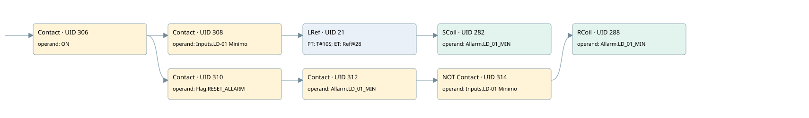

ld-01 low lime level
allarms 2 · 검색 색인 순서 3 · 원본 내부 NID 추정 3
백업 PLF 원본의 2655881 바이트 위치에서 복원한 XML. 검색 문서 1228의 객체 키 16102200f00f000000000000와 연결했다. 이름 해석 8/9개. 남은 RefId는 상수 또는 미해석 참조다.
연결 구조 다시 그리기
원본 Part/PCon/Wire를 이용한 연결도다. TIA 화면의 래더 배치 또는 실행 결과를 재현한 그림은 아니다. 핀 연결은 아래 표와 원본 XML을 기준으로 읽는다. 노드 위에 마우스를 두면 피연산자 이름을 볼 수 있다.

접점·코일·블록과 피연산자
| Part UID | Gate | Negated 핀 | 연결 피연산자 |
|---|---|---|---|
| 306 | Contact | operand = ON | |
| 308 | Contact | operand = Inputs.LD-01 Minimo | |
| 21 | LRef | 호출 참조: RefId 78; PT = T#10S; ET = RefId (RefId 없음) / ORef UID 28 | |
| 282 | SCoil | operand = Allarm.LD_01_MIN | |
| 310 | Contact | operand = Flag.RESET_ALLARM | |
| 312 | Contact | operand = Allarm.LD_01_MIN | |
| 314 | Contact | operand | operand = Inputs.LD-01 Minimo |
| 288 | RCoil | operand = Allarm.LD_01_MIN |
접점 경로를 펼친 조건식
Contact·O/A·비교기의 원본 연결을 읽기 쉽게 펼친 보조 해석이다. POWER는 전원 레일 시작을 뜻한다. 호출 블록·에지·타이머의 내부 동작과 다중 쓰기 순서는 이 표로 실행 검증하지 않았다. 미해석 핀과 RefId는 원문 연결표에서 확인한다.
| UID | 동작 | 대상 | 원본 접점 경로 | 내용 |
|---|---|---|---|---|
| 282 | SCoil | Allarm.LD_01_MIN | LRef UID 21.Q (블록 동작 확인) | 조건 성립 시 Set |
| 288 | RCoil | Allarm.LD_01_MIN | (((ON AND Flag.RESET_ALLARM) AND Allarm.LD_01_MIN) AND NOT [Inputs.LD-01 Minimo]) | 조건 성립 시 Reset |
원본 배선 연결
| Wire UID | 동일 Wire 연결 끝점 |
|---|---|
| 316 | Powerrail {} ↔ Part 306.in |
| 296 | ORef 289 (ON) ↔ Part 306.operand |
| 307 | Part 306.out ↔ Part 308.in ↔ Part 310.in |
| 29 | ORef 30 (Inputs.LD-01 Minimo) ↔ Part 308.operand |
| 27 | Part 308.out ↔ Part 21.IN |
| 23 | ORef 24 (T#10S) ↔ Part 21.PT |
| 25 | Part 21.Q ↔ Part 282.in |
| 26 | Part 21.ET ↔ ORef 28 (RefId (RefId 없음)) |
| 299 | ORef 291 (Allarm.LD_01_MIN) ↔ Part 282.operand |
| 300 | ORef 292 (Flag.RESET_ALLARM) ↔ Part 310.operand |
| 311 | Part 310.out ↔ Part 312.in |
| 301 | ORef 293 (Allarm.LD_01_MIN) ↔ Part 312.operand |
| 31 | Part 312.out ↔ Part 314.in |
| 33 | ORef 34 (Inputs.LD-01 Minimo) ↔ Part 314.operand |
| 32 | Part 314.out ↔ Part 288.in |
| 304 | ORef 295 (Allarm.LD_01_MIN) ↔ Part 288.operand |
식별자 해석 근거 9개
| ORef UID | RefId | 이름 | IdentXmlPart 파일 | 해석 방법 |
|---|---|---|---|---|
| 289 | 1 | ON | 0570-IdentXmlPart.xml | UID/RID + search-text + NID agreement |
| 30 | 82 | Inputs.LD-01 Minimo | 0573-IdentXmlPart.xml | UID/RID + search-text + NID agreement |
| 24 | 81 | T#10S | 0571-IdentXmlPart.xml | literal candidate: UID/RID/NID + nearby named declarations + search-text agreement |
| 28 | (RefId 없음) | 미해석 RefId | 식별 선언 원본 참조 | 미해석 |
| 291 | 42 | Allarm.LD_01_MIN | 0573-IdentXmlPart.xml | UID/RID + search-text + NID agreement |
| 292 | 38 | Flag.RESET_ALLARM | 0573-IdentXmlPart.xml | UID/RID + search-text + NID agreement |
| 293 | 42 | Allarm.LD_01_MIN | 0573-IdentXmlPart.xml | UID/RID + search-text + NID agreement |
| 34 | 82 | Inputs.LD-01 Minimo | 0573-IdentXmlPart.xml | UID/RID + search-text + NID agreement |
| 295 | 42 | Allarm.LD_01_MIN | 0573-IdentXmlPart.xml | UID/RID + search-text + NID agreement |
검색 코드 보조 자료
참조 명칭을 찾기 위한 자료이며 실행 순서나 AND/OR 관계는 위 연결표로 확인한다.
"on" "inputs"."ld-01 minimo" ton "min_ld_01" t#10s "allarm".ld_01_min "flag".reset_allarm "allarm".ld_01_min "inputs"."ld-01 minimo" "allarm".ld_01_min